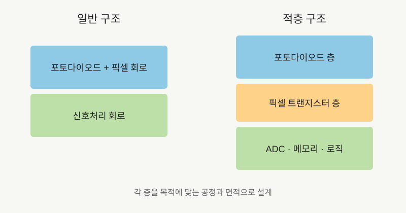

NOTE 04 · IMAGE SENSOR
적층 CMOS 이미지센서의 구조
CMOS 이미지센서의 픽셀에는 빛을 전하로 바꾸는 포토다이오드와 전하를 읽는 트랜지스터가 들어간다. 픽셀 피치가 작아지면 두 요소가 제한된 면적을 나눠 써야 한다. 포토다이오드 면적을 줄이면 포화 전자량과 감도가 불리해지고, 트랜지스터를 지나치게 줄이면 읽기 노이즈와 동작 속도에서 손해를 볼 수 있다.
적층 CMOS는 이 문제를 평면이 아니라 높이로 푼다. 초기 적층 센서는 픽셀 웨이퍼 아래에 신호처리 회로를 붙였다. 최근의 2층 트랜지스터 픽셀은 여기서 한 단계 더 나아가 포토다이오드와 픽셀 트랜지스터까지 서로 다른 기판에 놓는다. 빛을 받는 면적과 증폭 회로의 면적을 각각 확보할 수 있는 구조다.


적층 구조의 출발점은 후면조사형(BSI) 센서다. 배선층 뒤에서 빛을 받던 전면조사형과 달리, 웨이퍼를 얇게 가공해 포토다이오드 쪽으로 빛을 직접 넣는다. 여기에 로직 웨이퍼를 별도로 붙이면 픽셀 공정과 디지털 회로 공정을 각자 목적에 맞게 선택할 수 있다. 고밀도 Cu-Cu 접합은 픽셀층과 회로층 사이의 신호 연결 수를 늘리는 데 사용된다.
소니는 1μm 환산 조건에서 기존 구조보다 포화 신호량이 약 두 배라고 설명한다. 더 많은 전자를 담는다는 뜻이고, 밝은 하늘과 어두운 피사체가 함께 있는 장면에서 여유가 생긴다. 증폭 트랜지스터도 크게 만들 수 있어 저조도 읽기 노이즈를 줄이기 쉽다.
로직층에는 고속 ADC, HDR 합성, 위상차 검출, 메모리 같은 기능을 넣을 수 있다. 산업용 센서에서는 글로벌 셔터 메모리를 별도 영역으로 옮겨 포토다이오드 면적을 확보하는 방식도 쓰인다. 적층은 화질뿐 아니라 센서 내부 처리량을 높이는 수단이다.
제조 난도는 높아진다. 웨이퍼 두 장의 정렬 오차, 접합 수율, 층간 열 전달과 전체 원가를 관리해야 한다. 적층 센서의 실제 성능은 픽셀 구조 하나가 아니라 접합 공정, 읽기 회로, 열 설계를 포함한 전체 시스템에서 결정된다.